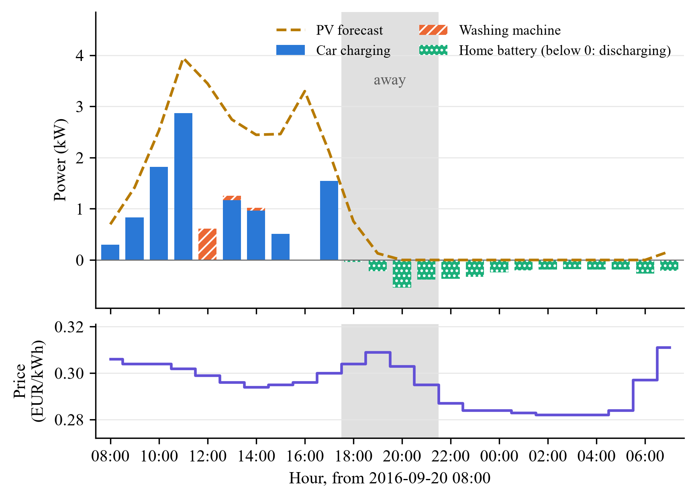

A home energy gateway runs EMHASS as the optimiser (MPC, model predictive control) for PV, a home battery, a heat pump and an EV charger. Language-model agents do what an optimiser cannot: turn the household's plain-language plans into constraints, explain the plan, react to deviations and configure the optimiser. They run on a small language model (SLM) on the gateway itself, so plans stay in the house; a cloud LLM is the reference and an optional fallback. A deterministic checker and control layer keep every plan safe.
A home energy gateway reads the smart meter and controls the home's energy assets (PV, battery, EV charger, heat pump, smart appliances), deciding every few minutes when each draws, stores or exports power so that the household pays less, uses more of its own power and stays within the grid operator's limits.
Language-model agents can turn plain-language preferences into optimiser constraints (Sanguinetti et al., 2025; Michelon et al., 2025) or schedule appliances directly (El Makroum et al., 2025; Jonah et al., 2026), but direct schedulers fabricate schedules and need a deterministic validator.
So the agent interprets plans, configures the MPC and explains the plan; the MPC schedules and a checker and control layer switch the devices. In our gateway pilot, MPC with one fixed setting beat agents that planned for cost.
Cloud LLMs reveal when the family is away, stop working offline and cost money per call. Small models (below about 10 billion parameters) now run on boards such as the Raspberry Pi 5 (Islam et al., 2025), but are less capable. Whether they can interpret plans and configure an optimiser, and what a harness or cloud fallback adds, is untested. Here one gateway (Raspberry Pi 5 16 GB or mini PC) runs EMHASS and the small model side by side; the model runs at lower priority with a time limit, so the control loop never waits for it.
RQ. How can small language models on a home energy gateway reliably interpret household plans and configure an optimiser?
Models: Gemma 4 E4B (main candidate) and E2B, Ministral 3 8B and 3B, Nemotron 3 Nano 4B; GPT-6 Luna as the cloud LLM. Runs on a laptop with an 8 GB GPU; SQ3 also on a Raspberry Pi 5 (16 GB) and a Ryzen mini PC (32 GB). In each sub-question the small model is compared with the cloud LLM.
Usability is not measured with users; the claim is that the HEMS works without expert configuration, from plans written by people other than the author. A usability study is future research.
| Sub-question | Measured by | Draft hypothesis (thresholds fixed at registration) |
|---|---|---|
| SQ1 Interpreting household plans. How accurately does a small model turn household plans into optimiser requirements, and what do checks and a cloud fallback add? | Constraint precision and recall vs answer key; clarification F1; decision accuracy (commit or ask correctly); household requirements met; rejected plans, failed calls and the share of plans sent to the cloud fallback; four set-ups (SLM alone, + checker, + checker + cloud fallback, LLM alone) | H1 best SLM within 0.10 of the LLM on recall and decision accuracy · H2 with the best SLM, household requirements met on more than 90 % of feasible house-days · H3 with checker and fallback, SLM decision accuracy within 0.10 of the LLM, fallback on ≤ 20 % of plans |
| SQ2 Configuring an optimiser. Can a small model configure the optimiser from the house's history as well as a cloud model and better than an automatic tuner? | Adjusted cost (battery charge and stored heat left at midnight subtracted) and saving over the default MPC; share of the gap between rules and perfect foresight closed; difference to the auto-tuner (same history) and to the LLM Configurator | H4 SLM-configured MPC costs at most 0.20 EUR per week more than the auto-tuner and than the LLM-configured MPC |
| SQ3 On local hardware. Does the saving of running the model on the gateway outweigh its cost in time, energy, money and privacy? | Tokens, USD, mean and p95 (95th-percentile) latency, Wh (watt-hours) per event measured at the wall above the device's idle power, share of household data that leaves the house; costs set against those of the cloud LLM | H5 on each device the p95 time per plan is at most 15 minutes; plans due within 30 minutes go to the fallback; yearly saving exceeds the energy and cost of inference |
Grid and battery limits are safety checks, not hypotheses. Conditions in which interpretation or configuration fails (weather, price pattern, household load, plan type) are reported descriptively. Analysis: cluster bootstrap intervals over plans, exact binomial and paired Wilcoxon or McNemar tests, Holm correction within each SQ; thresholds are set from the pilots and registered before the held-out plans are run.
Three layers; models sit in one. The MPC replans every hour on its own; an agent runs only on an event (a message, a commit, a plug-in or deviation, the weekly configuration). A model layer calls the cloud LLM only when the small model's answer fails twice or the checker rejects it.
| Agent | Started by | Job | Needs |
|---|---|---|---|
| Household Assistant | a message from the household | turns the plan or change into constraints, previews them, commits or asks | answer within about a minute; private, so a local small model, with the cloud LLM as fallback |
| Explainer | each commit; once a day | writes the message and the daily report from the committed plan's figures | numbers must match the plan (checked); short, cheap calls |
| Monitor | an EV plug-in; a large deviation from the plan (raised by the control layer) | finds the cause (forecast error, unexpected load, late car), adjusts constraints within what the household said, or alerts the household | runs during the day without a household message; must not override household requirements |
| Configurator | once a week | proposes MPC settings from the house's history and backtests them | analytical, may take minutes; small model compared with the cloud LLM (SQ2) |
The household talks to the gateway through an app, by text or voice, over the home Wi-Fi or an encrypted VPN when away. The gateway runs speech recognition, the model and the planning, so nothing leaves the house unless the fallback is used. Local voice follows Home Assistant's Assist (Home Assistant, 2026).
| App view | What it shows | Comes from |
|---|---|---|
| Now | PV generation, home consumption, battery charge, grid import and export, EV charging, indoor temperature | control layer, every 15 minutes |
| Today's plan | battery, heat pump and EV schedule, prices by hour, committed requirements (car by 07:30, comfort bands) | MPC plan and checker |
| Savings | cost today, this week and month against rules, self-consumption share, exported energy | history store |
| Messages | replies, questions to answer, alerts, daily report, with a "why" for each decision | Explainer and Monitor |
| Talk | text box and push-to-talk button; transcript shown before the plan is committed | voice pipeline and Household Assistant |
Each change below comes from something the pilots showed.
| Change | Why (evidence) |
|---|---|
| Tool descriptions never suggest a default value for a decision (no "reserve 50 %") | In the first pilot both models copied the suggested 50 % reserve in most plans |
| The agent sets constraints and settings; the MPC computes the schedule | In the planning pilot one fixed MPC setting closed more of the cost gap than agents that planned; agents that write schedules invent some (Jonah et al., 2026) |
| Agent called on events only; MPC replans hourly by itself | Hourly MPC beat checkpoint MPC; agent calls cost 44-190 s per day |
| One structured output per call (constraints or settings), validated against ranges | Fewer tool calls; malformed calls (3 in 63 for gpt-oss-20b) fall back cleanly |
| The harness pre-computes the situation and history summaries | The agent's tool calls were mostly lookups; deterministic summaries are cheaper and exact |
| The control layer holds the planned grid exchange; the battery absorbs forecast error | Following the planned battery power made every forecast-based strategy worse than rules |
| End-of-day energy valued the same way in the optimiser and the score | A hard reserve made the optimum look worse than rules |
A ReAct agent (prototypes/react_gateway/agent.py) reads the message, looks at the home's data with four tools and acts only through plan_schedule; the app always shows the tool's result, never a schedule the model wrote.
| Function | Input → output | Notes |
|---|---|---|
get_home_state() | → time, home battery, car charge and charger, indoor °C, comfort settings, usual car settings (80 % by 07:30) | Read from the twin at the time of the message |
get_prices() | → day-ahead import price per hour to the end of the known prices, cheapest hours, feed-in price | German day-ahead prices, dynamic tariff |
get_weather_forecast() | → PV output per hour, heat demand, base load | Weather-driven forecasts from DWD (German Weather Service) data |
get_appliances() | → measured dishwasher (0.76 kWh, 1 h) and washing machine (0.85 kWh, 2.25 h) cycles with power profiles | Median cycles of the OPSD house |
plan_schedule(requirements) | car charges, appliance runs, away periods, comfort bands, unclear words → read-back in words, then problems to ask about, or the MPC schedule with a reason per device, cost, saving vs starting at once and a check of each requirement | Feasibility, usual settings and clock times are handled by code, not by the language model |
Final answer AppAnswer | commit true or false · questions · short explanation for the household | The gateway commits only if the model commits and the last schedule met every requirement or carries a warning |
plan_schedule doesThe MPC in the tool is a one-off preview; after a commit the hourly MPC takes over without the model.
plan_schedule. Dashed lines go back to the model: a problem from the checker becomes a question, and a wrong time in the read-back makes the model call the tool again (the app shows the last result). The MPC in the tool is a single preview; the hourly replanning after a commit needs no model call.| Household requirement | MPC constraint it fills |
|---|---|
| Car charge ("charge the car for work tomorrow") | energy Ecar to add between the earliest charging slot a and the departure b (usual 80 % by 07:30 if not stated) |
| Appliance run ("dishwasher done before we're home") | one start of the measured cycle inside the window [a, b); no deadline = end of the known prices |
| Away period, comfort band ("22-23 from 6 to 8") | lower and upper indoor temperature per slot; away lowers the band to the 17 °C set-back |
Words the committed plan's pre-computed figures for the household (on each commit and once a day); every cited figure is checked against the plan, and a mismatch sends a fixed template. Designed, not built.
Started by a plug-in or a large deviation; finds the cause, adjusts constraints only within what the household asked, or alerts the household. Designed, not built.
| Function | Input → output | Notes |
|---|---|---|
history_summary(item) | loads · EV · comfort · PV vs weather · forecast error → weekly statistics | From the house's own meters and DWD weather |
backtest(settings, weeks) | → adjusted cost, peaks, comfort and EV violations of the MPC on past weeks | The agent compares candidates on data, not by guessing |
Final answer MpcSettings | PV derating by weather class and battery reserve (confirmatory); default comfort bands and flexible-load windows (exploratory) · reason | Starts from defaults, uses past weeks only; applied from the next day if the backtest beats the current settings |
On the gateway the MPC is EMHASS 0.18.4, called by the harness over REST; the pilots solved the same formulation with PuLP/CBC in about 0.1 s (thesis Section 4.3). 15-minute slots to the end of the known prices.
Objective: minimise import cost at the dynamic price minus feed-in income (0.123 EUR/kWh) minus the value of energy left at the end, plus large penalties for a missed car charge, comfort band or appliance run, so a requirement is never traded for money.
| Part | What the MPC decides or respects (per 15-minute slot) |
|---|---|
| Decisions | grid import and export; battery charge and discharge; heat pump power; car charging power; a binary start for each appliance run (this makes it a MILP) |
| Power balance | base load + heat pump + car + appliances + battery charge − discharge − PV = import − export |
| Battery | 10 kWh, 5 kW, 95 % efficiency each way, kept above 10 % |
| Building | one-node thermal model: C (Tt+1 − Tt) = Δ (COPt ht − Qt − U (Tt − Tset)), C = 10 kWh/K, U = 0.15 kW/K; heat pump up to 3.2 kW |
| Car, appliances | car energy before departure at up to 3.7 kW; each appliance starts exactly once inside its window or counts as missed |
| Configurator settings | PV derating δ (plan with δ × PV forecast), battery reserve at midnight; a §14a grid limit would cap the import |

Agents appear at steps 1-4 and 6-7, and after step 8 only if the control layer raises a deviation. Between them the MPC replans every hour and the control layer runs every 15 minutes without a language model.
The Configurator replaces the expert who tuned the MPC by hand in the pilot (PV derating 0.9). Its success is measured against that expert setting (SQ2).
Core data are open (CC BY 4.0 unless noted), from Konstanz, 2015-2019, and downloaded.
| Dataset | What it provides | Period · resolution | Role | Checked |
|---|---|---|---|---|
OPSD (Open Power System Data) Household data, DE_KN_residential4 | PV, grid import and export, heat pump, EV, dishwasher, washing machine, fridge, freezer | Oct 2015 – Feb 2018 · 15 min | core main house | 2016 complete; PV 11.0 MWh, HP 2.6 MWh, EV 1.0 MWh |
OPSD residential1, 3, 6 | PV; heat pump (1); appliances; circulation pump (3, 6); export (3, 6) | 2014 – 2018 · 15 min | core more houses for configuration | Coverage listed; quality per day to check |
OPSD residential2, 5 | Appliances only, no PV | 2015 – 2019 · 15 min | optional appliance plans | Coverage listed |
| DWD station 02712 Konstanz | Hourly air temperature, global radiation | 1971 – 2025 / 1977 – 2026 · 1 h | core weather classes, forecasts | 0.2-0.3 % missing; radiation vs PV r = 0.95 hourly |
| Energy-Charts day-ahead prices (SMARD, the Federal Network Agency's market data) | DE-AT-LU, then DE-LU spot prices | Oct 2015 – May 2019 · 1 h | core import and export price | 2 hours missing; 97 negative hours in 2016 |
| BDEW (German Association of Energy and Water Industries) price analysis (Dec 2023) | 2016 household price components (28.80 ct/kWh) | yearly | core dynamic tariff | Components read from the report |
| EEG (Renewable Energy Sources Act) feed-in tariff | 12.31 ct/kWh, rooftop ≤ 10 kWp from Nov 2015 | monthly | core export price | Municipal tables; check Bundesnetzagentur |
| When2Heat, Germany | Heat pump COP (coefficient of performance) by source and sink | 2008 – 2022 · 1 h | core heat demand from HP electricity | Extracted 2015-2018 |
| Plan benchmark | Plain-language plans, changes, ambiguous, conflicting and infeasible requests, with answer keys, each bound to a real house-day | one per house-day | core SQ1 ground truth | Edge-case pilot set of 22 plans drafted; held-out plans to be written by 3-5 people other than the author, second-person check |
| Norwegian residential EV sessions | Plug-in, plug-out, energy; 35,377 sessions | 2018 – 2021 · per session | optional realistic departure times | Downloaded |
| Finnish prices (Elering, Sahkotin) | FI spot prices | 2015 – 2026 · 1 h / 15 min | comparison Finnish dynamic prices | Downloaded |
| Product data sheets | Battery, charger, heat pump limits | n/a | core model parameters | To be sourced |
Weeks from the start of the follow-up thesis. Amber bars are the agent work and the registered run; the rest builds the benchmark and baselines. The edge-board runs come last, once the devices and a power meter are at hand. Agree the schedule with the supervisor before starting.
| Risk | Handling |
|---|---|
| Interpretation too easy (ceiling effect) | Changes, ambiguous and infeasible requests; plans by other people |
| Small model configures no better than the auto-tuner (seen in autumn) | Report it (H4); the thesis then rests more on SQ1 and SQ3 |
| Small model weaker at deciding when to ask | Checker, rules in code and the cloud fallback; report the gap |
| Small model too slow on gateway hardware | Plan-sized context, event-driven Assistant, fallback for urgent plans |
| Test plans inspected; two rules came from their errors | Develop only on the 14 development plans; held-out plans by other people are the real test |
| Gateway energy use cancels the savings | Measure with a power meter on both devices (H5) |
| Simulation only | Home Assistant replay; field study as future work |
Nothing is registered or committed. The plan lives on new-thesis/home-gateway with the prototypes and docs/protocol_home_gateway.md.
All pilots are exploratory: mostly one house, one run each, draft answer keys.
| Model | Dev decisions | Test decisions | Precision / recall | s per plan | Tool calls | Met on the real day | Failed |
|---|---|---|---|---|---|---|---|
| GPT-6 Luna (cloud) | 14/14 | 21/22 | 1.00 / 1.00 | 6.9 | 6.0 | 9/12 | 0 |
| Gemma 4 E4B | 14/14 | 19/22 | 0.86 / 0.83 | 9.9 | 2.4 | 9/12 | 0 |
| Gemma 4 E2B | 13/14 | 17/22 | 0.67 / 0.61 | 6.8 | 2.4 | 8/13 | 0 |
| Ministral 3 3B | 11/14 | 15/22 | 0.33 / 0.30 | 3.7 | 4.5 | 4/12 | 0 |
| Nemotron 3 Nano 4B | 10/14 | 12/22 | 0.50 / 0.52 | 26.5 | 2.0 | 2/4 | 7 |
| Ministral 3 8B | 4/14 | 9/22 | 0.00 / 0.00 | 6.6 | 2.0 | none | 0 |
Everyday wording, laptop RTX 4070, one run per model. "Met": committed plans run through the closed loop and checked against the key; the misses of Gemma and Luna also miss with exact parameters.
| Step | Status | What it showed |
|---|---|---|
| 1. Commit the revised plan and prototypes | done | Everything is committed on main, which now holds this thesis; the first thesis is kept on the old-thesis branch |
| 2. Check the answer keys (22 test, 14 development) | author | All drafts, now in everyday wording; changed keys first: X1, X4 and DX1 (commit with a warning), DA1 (Saturday 07:30), DA2 (cheapest time), and A5 ("by lunchtime" as vague) |
| 3. Plan pilot (SQ1): structured call, 22 plans | done | Precision / recall, decision: Gemma 4 E4B 1.00 / 0.87, 0.86; GPT-6 Luna 1.00 / 0.96, 0.86 (asked needlessly on three plans). |
| 4. Configurator pilot (SQ2), spring | done | Saving vs default, 8 weeks, hourly MPC: Gemma 4 E4B 2.87 EUR, Luna 4.15, expert 3.52, auto-tuner 1.91 (it chased the last two weeks). |
| 5. Redesign around small language models | done | New title, RQ, SQ1-SQ3, draft H1-H5; SLR inside DSR; model layer with cloud fallback. |
| 6. Checker (SQ1) | done | Decision alone → with checker: Gemma 0.86 → 0.95, Luna 0.86. Failed answers became questions; a cloud fallback added nothing. |
| 7. Configurator on three houses (SQ2), autumn | done | Hourly MPC: Gemma within 0.2 EUR of the cloud LLM on every house; the auto-tuner saved more than both on the main house (3.35 vs 3.00 and 2.82); PV-only homes gained little from any setting. Answer: about as well as the auto-tuner, not better; less than the cloud LLM in spring. |
| 8. Closed loop (Cycle 2) | done | Gemma executed 11 plans and met 10 at the cost of the exact parameters; the miss is impossible for every system. Rules met 8 and cost 5.56 EUR more. |
| 9. Models for a 4 GB board | done | Too weak (Llama 3.2 3B) or too big (Gemma 4 E4B, 6.6 GB); the gateway needs about 8 GB or more. |
| 10. Plan-sized context window | done | Faster with the same answers; reasoning stays on. |
| 11. New model set | done | Gemma 4 E4B/E2B, Ministral 3 8B/3B, Nemotron 3 Nano 4B, GPT-6 Luna (US/EU models only). |
| 12. ReAct gateway (SQ1, Cycle 3) | done | Gemma 19/22 test and 14/14 dev decisions, Luna 21/22 and 14/14 (table above). |
| 13. The Household Assistant with EMHASS | done | 14/14 dev decisions, EMHASS at most 2.4 s per solve, 4-13 s per plan with the model on the GPU. One-device test (EMHASS, harness and Gemma on the CPU, same 4 physical cores): 8 of 8 decisions right at 2-4 min per plan; EMHASS replans (median 0.35-0.48 s, max 1.04 s) and control steps (0.04 s) barely affected while the model answers; capping the model at 3 cores with low priority made it slightly faster (168 vs 188 s). Lessons: set the model's threads to its cores; serialise EMHASS calls. |
| 14. Household hardware for SQ3 | next | Buy a Raspberry Pi 5 16 GB, a mini PC and a power meter (a Shelly plug is logged automatically); the edge kit is ready (step 20). Laptop: 3 s per plan on GPU, 39 s on 4 CPU threads, MPC 0.08 s. |
| 15. Send the plan and the pilots to the supervisors | next | Agree scope: SLM framing, hardware, plan writers, 20 weeks |
| 16. Literature screening; recruit 3-5 plan writers | next | Searches done; title and abstract screening done (99 studies to full text). Full text: 34 assessed, 27 include, 7 exclude (reviewer agreement kappa 0.92); 65 reports still to retrieve. Supplementary search in Scopus still to run. Plan writers use everyday wording; keys follow the same rules as the pilot plans. |
| 17. Held-out materials | done | 120 scenario cards on new days of the main house (season x weather; 40 simple, 40 change, 20 ambiguous, 20 conflicting), four writer sheets, collect script, keying guide with a blind second keying. Sheets ready to send. |
| 18. Registration decisions | done | Power calculation: H1/H3 margin 0.10 (0.05 would need about 390 plans), H2 against 90 %, H4 0.20 EUR per week against the auto-tuner and the cloud model, H5 15 minutes; plans on the main house only; Configurator weeks in winter and summer 2016; EMHASS pinned by digest, model versions recorded. |
| 19. Runner, confirm script, year simulation | done | Set-up without checks, cloud fallback on a failed answer or a refused commit, closed loop with EMHASS (cached by constraints), driver over models x set-ups x 3 runs; confirm script (Holm over H1-H3, H4, H5); year simulation over 49 weeks with an energy balance. Tested on development plans and pilot weeks only. The Configurator's weeks and the year keep the thesis MPC (thousands of simulated days); the thesis says so. |
| 20. Edge kit | done | One command per device; power log from a Shelly plug or manual readings; energy per plan above idle. Tested on the laptop (dry run, simulated plug, synthetic logs with known answers); not yet run on a device. |
| Later: extra datasets (in notes); Home Assistant replay | later | After the supervisor agrees the scope |
Tuned references are always chosen on separate weeks.
The repository holds the thesis text and the prototypes; main is this thesis. Prototype data stays in data/raw/ (gitignored): OPSD household data, DWD Konstanz weather, German day-ahead prices, When2Heat and the Norwegian EV sessions.
| Prototype | What it is |
|---|---|
| plan_pilot/ | structured-call reader; the 22 test plans and 14 development plans |
| react_gateway/ | the Household Assistant as a ReAct agent (plan_schedule); app views per model and plan |
| closed_loop/, home_gateway/ | planning pilot and closed loop on the digital twin of OPSD residential4 |
| configurator_pilot/ | Configurator against the auto-tuner, default and expert-tuned MPC over weekly windows (SQ2) |
| emhass_gateway/ | the Household Assistant with EMHASS; the one-device test |
| edge_bench/, edge_kit/ | speed on local hardware; scripts for the Raspberry Pi 5, the mini PC and a power meter (SQ3) |
| heldout/ | materials, runner and confirm script of the registered evaluation |
| slr/ | literature search and screening |
| designed_agents/ | prompts of the Monitor and the Explainer |
The text is gateway_body.tex. uv run python build_gateway_thesis.py joins it with the Oulu template preamble (gateway_preamble.tex) and writes the citations out, giving gateway_thesis.tex; latexmk -xelatex gateway_thesis compiles the PDF. gateway_thesis_overleaf.zip holds the .tex and its images for Overleaf.
| Figure | Source |
|---|---|
| 1.1 home energy system | home_energy_system.excalidraw |
| 1.2 with the gateway | tools/make_home_energy_system_fig.py |
| 4.1 architecture | tools/flow_figs/make_architecture.py |
| 4.2 plan_schedule | tools/flow_figs/plan_schedule.svg |
| 4.3 how each agent decides | tools/flow_figs/make_agent_flow.py |
| 4.4 one day at runtime | tools/flow_figs/runtime_day.svg |
| 4.5 an example plan | tools/make_example_day_fig.py |
| 4.6 user app | this page |
| 4.7 request path | tools/flow_figs/request_path.svg |
tools/flow_figs/export.py turns the SVGs into PNGs; the diagrams of sections 3 and 4 on this page are the same drawings.
Chapters 1 to 7 are drafted; parts without results say "In process", and all prototype results are exploratory. Still open: registering the hypotheses, collecting the 120 held-out plans and running the registered evaluation, the remaining full-text screening and the Scopus search, and the measurements on the Raspberry Pi 5 and the mini PC.